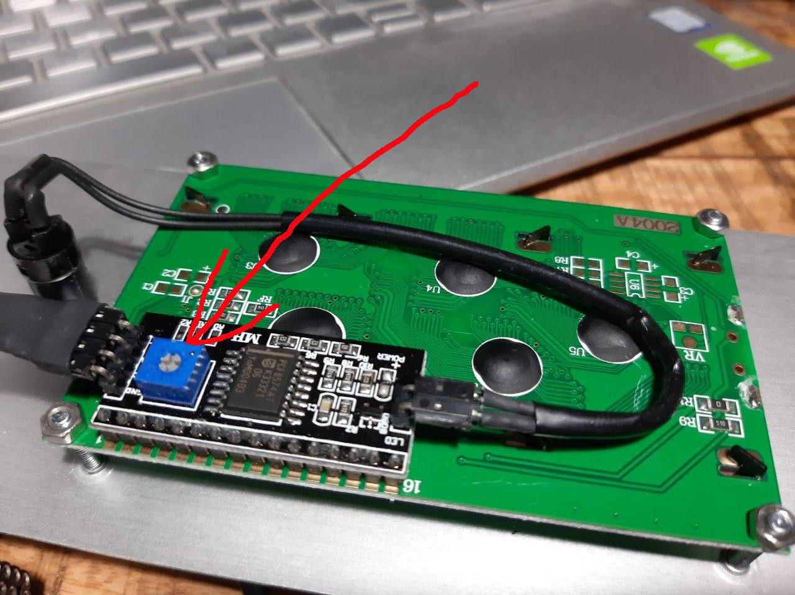
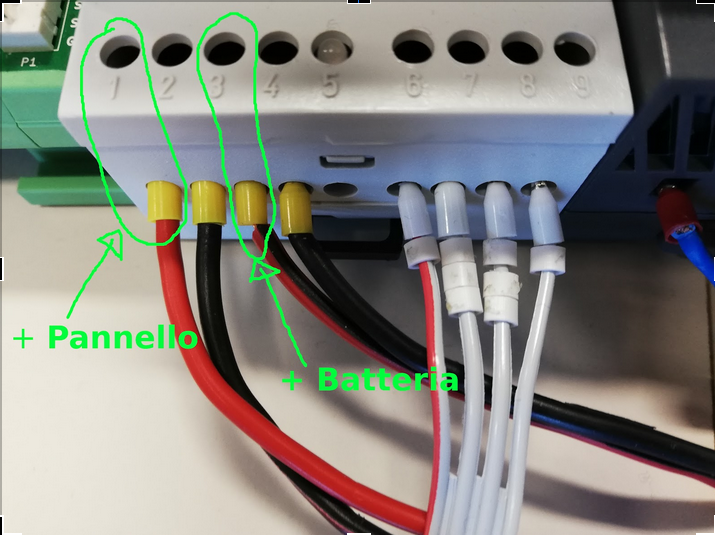

Manuale Utente¶
Hardware¶
Descrizione dell'hardware e delle sue principali funzioni.
Il datalogger è composto da moduli a loro volta composti board. Una descrizione con alcune foto si trova a https://doc.rmap.cc/stima_v3/howto_stima_v3/howto_stima_v3.html e https://doc.rmap.cc/stima_v3/doxygen/index.html a cui fare riferimento per maggiori dettagli. I moduli si interconnettono tra loro tramite bus I2C. Le board si interconnettono tramite interfaccia basata sullo standard UPIN-27.
Funzioni svolte dalle Board¶
RTC¶
determina la base dei tempi per il modulo master
conserva data e ora anche in mancanza di alimentazione tramite la carica accumulata in un supercondensatore per non più di ~24h
Core+¶
Contiene il microcontrollore in queste due versioni: * 8 MHz 3.3V * 16 MHz 5V
USB¶
E' una interfaccia USB con la porta seriale del microcontrollore. Permette di: * caricare firmware * effettuare debug
SDcard¶
Permette di utilizzare una SDcard per effettuare: * Aggiornamento firmware * salvataggio dati * debug
I2C¶
Espone una: * connessione I2C * ponticello per effettuare la configurazione
GSM¶
E' in realtà composto da due board: * SIM: in cui deve essere inserita la SIM card * vero e proprio modulo GSM: a cui deve essere connessa l'antenna
HUB¶
interconnessione
alimentazione
separazione BUS I2C e adattamento tensioni
Display¶
Funzioni software¶
Da scrivere
Accensione e supervisione (supervisor task)¶
RTC task¶
Da scrivere
Time task¶
Da scrivere
GSM task¶
Da scrivere
Sensors reading task¶
Da scrivere
Data saving task¶
Da scrivere
MQTT task¶
Da scrivere
Messa in opera¶
Da scrivere
Connessione e disconnessione¶
Impilamento board¶
Fare riferimento a:
Connessione moduli¶
Fare riferimento a:
Effettuare tutte le operazioni senza alimentazione elettrica.
Per la connessione elettrica tra moduli bisogna quindi conoscere la tensione di funzionamento di ciascun modulo/dispositivo da connettere e verificare la predisposizione corretta del ponticello di configurazione hardware sulla board I2C-hub.
Regolazione Display¶
Il display dispone di una apposita vite di regolazione (trimmer) del contrasto che deve essere regolato per rendere il display leggibile. Una cattica regolazione del contrasto rende i caratteri sul display completamente invisibili. Dispone inoltre di un pulsante per attivare la retroilluminazione. Accendere la stazione per avere qualche messaggio visualizzato sul display, premere il pulsante di retrilluminazione e procedere alla regolazione fino a una visualizzazione ottimale.
Assemblaggio scatola stazione¶
I moduli possono essere montati in qualsiasi ordine. Sulla piastra HUB deve verificare se l’alimentazione e’ impostat a 3.3 V o 5 V; Tale tensione si può impostare spostando il ponticello corrispondente. Nei moduli nell board base e’ riportata una piccola saldatura in prossimita’ della del valore stampato 3 V o 5 V che indica a quale tensione funziona il modulo. Il modulo primario ed il display hanno una tensione di funzionamento di 5V. I cavi interni di collegamento tra moduli ed HUB hanno come differenza solo da lunghezza.
Quando si connette un cavo fare attenzione nel momento dell'inserimento a non piegare i pin sulla scheda HUB.
Sostituzione batteria¶
Per misurare la tensione della batteria a vuoto è necessario staccare un polo per misurare la tensione reale senza il contributo del pannello solare.
Se c'è da cambiare la batteria bisogna staccare il connettore in hub, in modo da non bloccare la stazione. Staccando il connettore non si incorre infatti nel problema di alimentare il datalogger con una tensione sotto i 6 V.
Per il cambio batteria procedere prima staccando il polo nero (-) e poi il rosso (+). Poi connettere prima il polo rosso e poi il nero alla nuova batteria.
Per togliere e ridare tensione alla stazione occorre agire sul regolatore di carica pannello-batteria nel modo seguente:
Facendo riferimento alla figura
rimuovere il positivo del pannello dal regolatore di carica, individuato dal numero 1
rimuovere il positivo della batteria dal regolatore di carica, individuato dal numero 3
aspettare 10 secondi
ricollegare la batteria attraverso il pin numero 3
ricollegare la batteria attraverso il pin numero 1
Quindi la sequenza dei collegamenti è 1-3-3-1
Antenna¶
Di solito l’antenna e’ posizionata internamento della scatola stazione, ma può essere posizionata all'esterno praticando un foro alla base della scatola e facendo uscire il cavo tramite un passacavo. Il connettore e’ standard quindi si può usare anche una antenna esterna di tipo direzionale.
SDcard¶
Formattazione¶
La formattazione della SDcard deve essere eseguita in modo corretto per garantire il funzionamento del datalogger. Sono accettati due tipi di formattazione:
FAT16
FAT32
Per essere certi di formattare correttamentela card ci sono due possibilità:
per windows e MAC https://www.sdcard.org/downloads/formatter/
per tutti i sistemi l'apposito firmware SdFormatter o il tool sensor_config_menu_sdcard messi a disposizione con Stima V3
Il metodo consigliato è il secondo.
Come formattare l'SDcard con il firmware SdFormatter.¶
Inserire l'SDcard nel modulo master e collegare solo il modulo master tramite cavo USB. eseguire:
pio run -e 1284p16m -t upload
pio device monitor
e seguire le indicazioni del programma.
Aggiornamento del Firmware¶
Logging¶
Vedi Diagnostica
Recupero dei dati¶
Vedi Recupero dati
Configurazione sensori¶
Qui vengono descritte le fasi per effettuare la configurazione dei sensori utilizzati dalla stazione. La stazione dovrà essere completamente assemblata per poter seguire le istruzioni qui riportate.
Sensore del vento Windsonic¶
Prima di poter utilizzare il sensore del vento Windsonic esso dovrà essere opportunamente configurato. Per farlo è necessario caricare il firmware sensor_config_menu_sdcard sul modulo i2c-wind. Connettere:
(sconsigliato) utilizzare un monitor seriale sulla porta USB dello stesso modulo
(consigliato) l'encoder insieme a un monitor seriale sulla porta USB dello stesso modulo
Seguire i menu selezionando "configurazione windsonic" per eseguire l'operazione.
Configurazione moduli¶
Tramite modulo sensor_config.¶
inserire SD card
collegare il modulo sensor_config al bus I2C tramite l'HUB
seguire i menu per configurare il moduli secondo le proprie esigenze
disconnettere il modulo sensor_config e riavviare la stazione
Tramite modulo master.¶
rimuovere le board GSM, SIM e RTC
collegare l'encoder e/o il monitor della porta seriale (USB)
senza SD card inserita caricare il firmware sensor_config_menu_sdcard
inserire la SD card
avviare la stazione
seguire i menu per configurare il moduli secondo le proprie esigenze
rimuovere l'SD card
caricare il firmware di stazione stima
inserire la SD card operativa
riavviare la stazione
Configurazione stazione¶
Qui vengono descritte le fasi per effettuare la configurazione della stazione necessaria al suo funzionamento.
Al termine delle operazioni la configurazione verrà salvata permanentemente sulla EEprom del modulo master.
Creare un nuovo utente RMAP tramite interfaccia WEB¶
Per iscriversi alla piattarforma RMAP bisogna collegarsi al sito: http://rmap.cc/
Andare con il mouse sul menù "Il mio RMAP", sulla destra della barra nera, e clickare su "Entra".
Apparirà una maschera che chiede utente e password. Nella seconda riga sotto a questa maschera clickare sul bottone blu "Registrazione" e si verrà inoltrati automaticamente alla maschera di registrazione.
Per registrarsi bisognerà scegliere ed inviare le seguenti informazioni:
username (una stringa lunga al massimo 9 caratteri che possono essere sia lettere che numeri);
la propria e-mail
la password (da inserire due volte per sicurezza).
Quindi bisogna clickare sul quadratino per dichiarare di aver letto le Condizioni di Servizio (descritte nel quadrato sotto riportato). Completate queste operazioni si può procedere a clickare su "Invia". Fatto questo il server RMAP invierà una mail di conferma all'indirizzo indicato nella maschera di registrazione. La registrazione verrà conclusa aprendo il messaggio mail e confermando la propria intenzione di iscriversi seguendo il link indicato.
Configurare una nuova stazione¶
Tramite interfaccia WEB¶
Tramite interfaccia WEB è possibile definire solo stazioni di modello (tipo e sensori) predefinito. Per modelli di stazione non predefiniti utilizzare la modalità a linea di comando.
Per poter registrare una nuova stazione è utile aver configurato un utente RMAP.
Seguire il link: https://rmap.cc/insertdata/newstation
Per definire la posizione della stazione si può seguire alternativamente una delle seguenti procedure:
indicare nel primo modulo l'indirizzo esatto della stazione (il sito utilizza il DataBase geografico di OpenStreetMap che riconosce gli indirizzi solo se indicati con precisione, quindi è necessario inserire l'indirizzo con nome completo della via, es: "viale Antonio Silvani 6, Bologna", oppure " via degli Albergati 32, Zola Predosa, Bologna"). Selezionare invia.
utilizzare la mappa sottostante, del secondo modulo, clickare sul segnaposto (quello a forma di goccia, ultimo in basso dei quattro centrali a sinistra della mappa) e posizionarlo sul punto preciso della mappa, con doppio click bottone sinistro del mouse. Se la posizione scelta non è corretta, si potrà cancellare la posizione (selezionare l'ultimo bottone a sinistra nella mappa a forma di bidone e poi clickare sul segnaposto) e riposizionare il marker, oppure spostare il segnaposto nella posizione corretta direttamente sulla mappa (selezionando prima il penultimo bottone a sinistra a forma di matita su foglio "edit layers", spostando il segnaposto e riclickando su "edit layer" per salvare la nuova posizione). Queste funzionalità potrebbero non essere disponibili su Android. Selezionare invia.
inserire nel terzo modulo le coordinate (latitudine e longitudine in formato sessagesimale
Individuata la posizione in tutti i casi bisognerà indicare: * il nome della nuova stazione * altezza della stazione in metri dal livello medio del mare * il modello (tipo e sensori collegati).
La procedura di inserimento della nuova stazione si concluderà quindi clickando su "invia".
Se i dati risulteranno corretti verranno presentati alcuni dati che dovranno essere utilizzati per trasferire i dati alla stazione.
A linea di comando¶
Il tool a linea di comando da utilizzare per configurare le stazioni è:
rmap-configure
Quando si utizzano i tool a linea di comando bisogna sempre considerare che saranno presenti due database:
database sul server RMAP (persistente)
database locale (volatile)
Mentre il database sul server RMAP è per definizione persistente quello locale se non già presente va creato utilizzando il comando:
rmapctrl --syncdb
Successivamente sono disponibili due comandi per mantenere i due database sincronizzati:
upload configuration to server:
rmap-configure --upload_to_server --station_slug="myslug" --user="myuser" --password="mypassword" --server=rmap.cc
download station configuration from server:
rmap-configure --download_from_server --station_slug="myslug" --user="myuser" --password="mypassword" --server=rmap.cc
Con modello (tipo e template sensori) predefinito¶
In questa modalità bisogna disporre di:
myuser: nome utente RMAP
mypassword: password utente RMAP
mystationname: nome stazione esteso
myslug: nome stazione breve
mystationmodel: modello stazione e template sensori connessi
mystationname: nome stazione esteso
myheight: altezza stazione in metri
mqttsamplerate: ogni quanti secondi deve essere elaborato e inviato un report
mytcpipntpserver: NTP server da utilizzare per sincronizzare l'ora
myapn: apn del provider GSM corrispondente alla schda SIM inserita in stazione (default="ibox.tim.it")
Comandi da impartire per configurare la stazione:
rmap-configure --wizard --station_slug="myslug" --height="myheight" --stationname="mystationname" --username="myusername --password="mypassword" --lat="mylat" --lon="mylon"
rmap-configure --addboard --station_slug="myslug" --board_slug=default --user="myuser" --serialactivate --mqttactivate --mqttuser="myuser" --mqttpassword="myuser" --mqttsamplerate="mymqttsamplerate" --tcpipactivate --tcpipntpserver="mytcpipntpserver" --tcpipname=stima --tcpipgsmapn="myapn"
rmap-configure --addsensors_by_template="mystationmodel" --station_slug="myslug" --board_slug=default --user="myuser" --password="mypassword" --upload_to_server
Esempio di configurazione:
rmap-configure --wizard --station_slug=malborghetto --height=2 --stationname="Malborghetto di Boara" --username="myuser" --password="mypassword" --lat=44.85892 --lon=11.65625
rmap-configure --addboard --station_slug=malborghetto --board_slug=default --user="myuser" --serialactivate --mqttactivate --mqttuser="myuser" --mqttpassword="myuser" --mqttsamplerate=900 --tcpipactivate --tcpipntpserver="it.pool.ntp.org" --tcpipname=stima --tcpipgsmapn internet.wind
rmap-configure --addsensors_by_template=stima_report_thpbwr --station_slug=malborghetto --board_slug=default --user="myuser" --password="mypassword" --upload_to_server
Eseguire:
rmap-configure --help
per avere indicazioni su altri parametri per particolari personalizzazioni.
Con modello (tipo e template sensori) non predefinito¶
In questa modalità bisogna avere piena padronanza del data model, dei sensori connessi e dei relativi metadati.
Qui un esempio di configurazione:
rmap-configure --wizard --station_slug="myslug" --height="altezzametri" --stationname=""""nome stazione"""" --username="myuser" --password="mypassword" --server=test.rmap.cc --lat="latitudine" --lon="longitudine" --mqttrootpath=report --mqttmaintpath=maint
rmap-configure --addboard --station_slug="myslug" --board_slug=default --user="myuser" --serialactivate --server=test.rmap.cc --mqttactivate --mqttuser="myuser" --mqttpassword="mypassword" --mqttsamplerate=900 --tcpipactivate --tcpipntpserver="it.pool.ntp.org" --tcpipname=stima --tcpipgsmapn ibox.tim.it --server=test.rmap.cc
rmap-configure --delsensors --station_slug="myslug" --board_slug=default --user="myuser"
rmap-configure --addsensor --station_slug="myslug" --board_slug=default --user="myuser" --sensorname="temperatura e umidità istantanea" --driver=I2C --type=ITH --address=35 --timerange="254,0,0" --level="103,2000,-,-"
rmap-configure --addsensor --station_slug="myslug" --board_slug=default --user="myuser" --sensorname="temperatura e umidità minima" --driver=I2C --type=NTH --address=35 --timerange="3,0,900" --level="103,2000,-,-"
rmap-configure --addsensor --station_slug="myslug" --board_slug=default --user="myuser" --sensorname="temperatura e umidità media" --driver=I2C --type=MTH --address=35 --timerange="0,0,900" --level="103,2000,-,-"
rmap-configure --addsensor --station_slug="myslug" --board_slug=default --user="myuser" --sensorname="temperatura e umidità massima" --driver=I2C --type=XTH --address=35 --timerange="2,0,900" --level="103,2000,-,-"
rmap-configure --addsensor --station_slug="myslug" --board_slug=default --user="myuser" --sensorname="pioggia" --driver=I2C --type=TBR --address=33 --timerange="1,0,900" --level="1,-,-,-"
rmap-configure --station_slug="myslug" --board_slug=default --user="myuser" --password="mypassword" --server=test.rmap.cc --upload_to_server
rmap-configure --config_station --station_slug="myslug" --board_slug=default --username="myuser" --baudrate=115200 --device=/dev/ttyUSB0
Modificare la configurazione di una stazione esistente¶
E' possibile modificare la configurazione della stazione dopo aver fatto login con il proprio utente e accedendo alla propia pagina personale selezionando la stazione e seguendo i successivi menu.
Trasferire la configurazione al datalogger¶
Tramite il tool a linea di comando tramite porta seriale (USB)¶
Dopo aver collegato il modulo master tramite il cavo USB ecco il comando da impartire per trasferire e salvare la configurazione nel datalogger:
rmap-configure --config_station --station_slug="myslug" --username="myuser" --baudrate=115200 --device=/dev/ttyUSB0
Tramite file binario¶
Salvare il file binario su SD card¶
Per eseguire la configurazione bisogna disporre del file binario versione 32 ottenuto dopo la configurazione della stazione sul server dal server stesso: * autenticarsi al server con il proprio utente e password * accedere alla propria pagina personale * selezionare la stazione di interesse * scaricare il file dalla voce "Scaricare la configurazione per Stima V3" * salvare il file su SD card
Salvare la configurazione sulla memoria permanente della stazione¶
Tramite SD card sul modulo master¶
rinominare il file binario di configurazione col nome "config.cfg"
inserire l'SD card con il file binario sul modulo master
inserire il ponticello di configurazione sul modulo master, board I2C
attendere 20 secondi
rimuovere il ponticello di configurazione
riavviare la stazione
Aggiornamento Firmware¶
Tramite SDcard¶
Per l'aggiornamento del firmware è necessario avere a disposizione due file:
FIRMWARE.BIN
"majorversion" . "minorversion"
majorversion e minorversion indicano la versione del firmware in oggetto ad esempio:
FIRMWARE.BIN
3.7
I due file andranno posti nella cartella principale della SDcard. Inserire l'SDcard nel modulo che necessita aggiornamento a modulo non alimentato e alimentare il modulo e attendere almeno 30 secondi.
E' possibile verificare se l'aggiornamento ha avuto buon fine con il modulo master tramite il display LCD che all'accensione deve visualizzare la nuova versione del firmware.
Tramite porta USB¶
Per l'aggiornamento del firmware è necessario avere a disposizione un file:
FIRMWARE.BIN
che dorà risiedere nella cartella corrente da dove si eseguiranno i comandi.
Collegare il modulo tramite cavo USB e dovrà essere l'unico dispositivo USB collegato in modalità seriale.
Per il modulo master e impartire il comando:
avrdude -v -p atmega1284p -c arduino -b 115200 -D -P /dev/ttyUSB0 -U flash:w:FIRMWARE.BIN:i
Per gli altri moduli impartire il comando:
avrdude -v -p atmega644p -c arduino -b 115200 -D -P /dev/ttyUSB0 -U flash:w:FIRMWARE.BIN:i
Recupero dati¶
Una volta recuperata la scheda Sdcard dal datalogger i dati possono essere letti con apposito tool linea di comando.
Sono necessari almeno due file:
AAAA_MM_GG.txt : AAAA = anno ; MM = mese ; GG = giorno
info.dat : metadati
Eseguire il seguente comando dalla stessa cartella contenete i file con i dati:
mqtt2bufr -i -f AAAA_MM_GG.txt -a info.dat | bufr2mqtt -h rmap.cc -u "myusername" -P "mypassword"
dove:
myuser: nome utente RMAP
mypassword: password utente RMAP
Remote Procedure Call¶
I dati vengono salvati sul modulo master ed è quella SD card che deve essere asportata dopo aver scollegato l'alimentazione.
Le remote procedure call permettono di far eseguire delle operazioni dal datalogger da remoto.
configure¶
La configurazione da remoto è possibile tramite tool a linea di comando:
rmap-configure --config_station --username="myuser" --station_slug="myslug" --transport=mqtt
Tramite un programma python:
from rmap import jsonrpc
MQTT_HOST = 'rmap.cc'
MQTT_RPCTOPIC = 'rpc/myuser/1112345,4412345/fixed/')
MQTT_USERNAME = 'myuser'
MQTT_PASSWORD = 'mypassword'
with jsonrpc.ServerProxy( jsonrpc.JsonRpc20(),\
jsonrpc.TransportMQTT(
host=MQTT_HOST, user=MQTT_USERNAME,password=MQTT_PASSWORD,
rpctopic=MQTT_RPCTOPIC,
logfunc=jsonrpc.log_stdout,timeout=1000)) as rpcproxy :
rpcproxy.configure()
time.sleep(20)
#rpcproxy.configure(mqttrootpath='report/myuser/1112345,4412345/fixed/')
#rpcproxy.configure(mqttmaintpath='maint/myuser/1112345,4412345/fixed/')
#rpcproxy.configure(mqttrpcpath='rpc/myuser/1165625,4485892/fixed/')
rpcproxy.configure(mqttsampletime=180)
rpcproxy.configure(save=True)
rpcproxy.reboot()
reboot¶
Il reboot del modulo master è possibile tramite tool a linea di comando:
rmap-configure --rpc_mqtt_reboot --username="myuser" --station_slug="myslug"
oppure tramite un programma python:
from rmap import jsonrpc
MQTT_HOST = 'rmap.cc'
MQTT_RPCTOPIC = 'rpc/myuser/1112345,4412345/fixed/')
MQTT_USERNAME = 'myuser'
MQTT_PASSWORD = 'mypassword'
with jsonrpc.ServerProxy( jsonrpc.JsonRpc20(),\
jsonrpc.TransportMQTT(
host=MQTT_HOST, user=MQTT_USERNAME,password=MQTT_PASSWORD,
rpctopic=MQTT_RPCTOPIC,
logfunc=jsonrpc.log_stdout,timeout=1000)) as rpcproxy :
rpcproxy.reboot()
recovery¶
Il recupero dei dati salvati su SDcard è possibile tramite tool a linea di comando specificando la data iniziale dei dati da recuperare (fino a data e ora corrente):
rmap-configure --rpc_mqtt_recovery --username="myuser" --station_slug="myslug" --datetime="2022-02-16T12:00"
oppure tramite un programma python:
from rmap import jsonrpc
MQTT_HOST = 'rmap.cc'
MQTT_RPCTOPIC = 'rpc/myuser/1112345,4412345/fixed/')
MQTT_USERNAME = 'myuser'
MQTT_PASSWORD = 'mypassword'
DATETIMESTART=[2021,12,22,12,0,0]
with jsonrpc.ServerProxy( jsonrpc.JsonRpc20(),\
jsonrpc.TransportMQTT(
host=MQTT_HOST, user=MQTT_USERNAME,password=MQTT_PASSWORD,
rpctopic=MQTT_RPCTOPIC,
logfunc=jsonrpc.log_stdout,timeout=1000)) as rpcproxy :
rpcproxy.recovery(dts=DATETIMESTART)
Temporizzazioni¶
Da scrivere
Salvataggio e invio dati¶
Da scrivere
Diagnostica¶
tramite DISPLAY¶
Messaggi all'accensione¶
Prima schermata attesa configurazione:
Wait configuration |
E' stato inserito il ponticello per la configurazione e la stazione rimane in attesa; Per attivare la stazioen bisogna rimuovere il ponticello.
Prima schermata, tipo e versioni:
---- www.rmap.cc ---- |
Stima station |
<station type> V: <firmware version> |
Configuration V: <configuration version> |
station type: tipo di stazione definito a tempo compilazione
firmware version: versione del firmware
configuration version: versione della configurazione per compatibilità
Seconda schermata, dati costanti di stazione:
<bcode1>: <constant station data 1> |
<bcode2>: <constant station data 2> |
bcode1: codice della prima variabile come da tabella B; Get the full table from: https://github.com/ARPA-SIMC/dballe/blob/master/tables/dballe.txt
constant station data 1: value 1
bcode2: codice della secondavariabile come da tabella B; Get the full table from: https://github.com/ARPA-SIMC/dballe/blob/master/tables/dballe.txt
constant station data 2: value 2
Terza schermata, stato sensori e metadati di configurazione:
Sensor: |
<sensor ok>/<sensor total> <OKKO> |
user |
<user> |
station |
<station> |
board |
<board> |
sensor ok: numero sensori rilevati
sensor total: numero tolale sensori previsti
OKKO: stato riassuntivo dei sensori ( OK: tutto bene; KO: malfunzionamento)
user: mqtt username
station: station slug
board: board slug
Quarta schermata, stato sensori e metadati di configurazione:
Sensor: |
<sensor ok>/<sensor total> <OKKO> |
server |
<mqtt server> |
ntp |
<ntp server> |
board |
<board> |
sensor ok: numero sensori rilevati
sensor total: numero tolale sensori previsti
OKKO: stato riassuntivo dei sensori ( OK: tutto bene; KO: malfunzionamento)
server: mqtt server name
ntp: ntp server name
board: board slug
Messaggi visualizzati nella quarta riga del display:
SD Card: KO: c'è un problema nell'utilizzo dell'SDcard
NEW Firmware loaded: è stato appena affettuato un aggiornamento del firmware e il firmware è stato rinominato sull'SDcard
Messaggi durante il funzionamento¶
<SN>: |
<h>:<m>:<s> |
rf:<rssi>/<ber> <LCD: KO> |
|
<RT> |
temp |
humidity |
precipitation |
battery |
charge |
solar panel |
|
SD<SN><SOKKO> |
MQ<MN><MOKKO> |
FA<FN><FOKKO> |
|
SN: orario prossima elaborazione: S inizio periodo report; N fine periodo report
h: ora GMT
m: minuti
s: secondi
rssi: qualità segnale radio; vedi tabella sotto (oppure KO in caso di errore)
ber: qualità segnale radio; vedi tabella sotto (oppure KO in caso di errore)
LCD: KO: messaggio se l'LCD ha avuto errori ed è stato reinizializzato
ultimi dati acquisiti:
RT: i dati visualizzati si riferiscono a: T test; R report
temp: temperatura e unità di misura
humidity: umidità e unità di misura
precipitation: precipitazione e unità di misura
battery: tensione batteria e unità di misura
charge: carica batteria e unità di misura
solar panel: tensione pannello solare e unità di misura
ultime oprazioni eseguite:
SN: numero di dati scritti su SDcard
SOKKO: stato riassuntivo scrittura SDcard ( OK: tutto bene; KO: malfunzionamento)
MN: numero di dati inviati al broker MQTT
MOKKO: stato riassuntivo invio dati MQTT ( OK: tutto bene; KO: malfunzionamento)
FN: numero di dati con acquisizione fallita dai sensori
FOKKO: stato riassuntivo acquisizione dati dai sensori ( OK: tutto bene; KO: malfunzionamento)
rssi:
RSI |
value |
|---|---|
0 |
-115 dBm or less |
1 |
-111 dBm |
2 to 30 |
-110 dBm to -54 dBm |
31 |
-52 dBm or greater |
99 |
not known or not detectable |
dBm is short for decibel per milliwatt and is a common unit for signal strength. -115 dbm is the lowest signal strength value and would typically mean that the station is on a network blind spot. -111 dBm is also a bad number for signal reception. I was able to connect to a network at -70 dBm. Here is a handy list of dBm levels and what they mean:
RSSI Condition:
dBm |
mean |
|---|---|
-109 |
Marginal |
-107 |
Marginal |
-105 |
Marginal |
-103 |
Marginal |
-101 |
Marginal |
-99 |
Marginal |
-97 |
Marginal |
-95 |
Marginal |
-93 |
OK |
-91 |
OK |
-89 |
OK |
-87 |
OK |
-85 |
OK |
-83 |
Good |
-81 |
Good |
-79 |
Good |
-77 |
Good |
-75 |
Good |
-73 |
Excellent |
-71 |
Excellent |
-69 |
Excellent |
-67 |
Excellent |
-65 |
Excellent |
-63 |
Excellent |
-61 |
Excellent |
-59 |
Excellent |
-57 |
Excellent |
-55 |
Excellent |
-53 |
Excellent |
If you will compare this to smartphones, marginal is one bar, OK is two bars, good is three bars and excellent is four bars.
ber (bit error rate):
In digital transmission, the number of bit errors is the number of received bits of a data stream over a communication channel that have been altered due to noise, interference, distortion or bit synchronization errors.
The bit error rate (BER) is the number of bit errors per unit time. The bit error ratio (also BER) is the number of bit errors divided by the total number of transferred bits during a studied time interval. Bit error ratio is a unitless performance measure, often expressed as a percentage
bear |
mean |
|---|---|
0 |
BER < 0.2% |
1 |
0.2% < BER < 0.4% |
2 |
0.4% < BER < 0.8% |
3 |
0.8% < BER < 1.6% |
4 |
1.6% < BER < 3.2% |
5 |
3.2% < BER < 6.4% |
6 |
6.4% < BER < 12.8% |
7 |
12.8% < BER |
99 |
not known or not detectable |
Tramite monitoraggio MQTT¶
Questo monitoraggio permette di visualizzare tutti i messaggi che la stazione invia al server e che il server ha ricevuto correttamente:
rmap-configure --mqtt_monitor --station_slug="myslug" --user="myuser"
i dati vengo visualizzati così come pubblicati e anche decodificati e interpretati.
Tramite porta seriale¶
Questo monitoraggio permette di visualizzare tutti i messaggi di logging che la stazione invia sulla porta seriale tramite il connettore USB:
rmap-configure --serial_monitor --station_slug="myslug" --user="myuser"
Ogni messaggio è composto da:
data |
importanza del messaggio |
messaggio |
La data e ora sono in GMT.
La importanza del messaggio è rappresentata da una lettera da interpretare come da legenda:
F |
fatal errors |
E |
all errors |
W |
errors, and warnings |
N |
errors, warnings and notices |
T |
errors, warnings, notices & traces |
V |
all |
Tramite SDcard¶
Per effettuare questo monitoraggio occorre utilizzare un firmware appositamente compilato con questa funzione inclusa; il firmware utilizzati normalmente in produzione non lo permettono.
Avviata la stazione la stessa messaggistica ottenuta dal monitoraggio tramite porta seriale verrà scritta in un file sulla SDcard con postfisso ".log". Il file sarà leggibile da PC una volta recuperata la SDcard.
Diagnostica del bus I2C¶
Il il firmware sensor_config_menu_sdcard permette una disgnostica del bus I2C ma solo se connesso come dispositivo di output a un monito della porta seriale (USB).